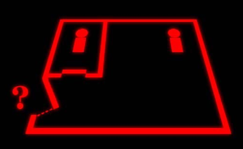
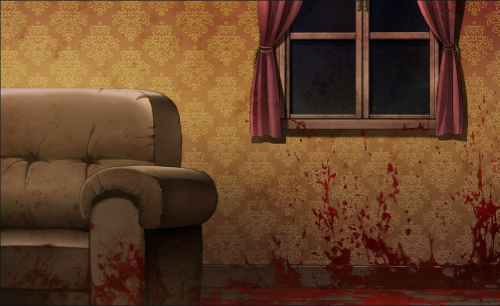

Interpool



Interpool est une organisation internationale de police criminelle. Elle posséde une
base de donné policieres contenant des informations sur les infractions ainsi que des
criminels (noms, empreintes digitales, passeports volé, etc). Leur but est d'apporté un
appui a des enquêtes, d'analyse et d'aide à la localisation de fugitifs.
Série de meurtres
Une série de meurtre a eu lieu dans le pays. Il y a eu plusieurs morts répertoriés et les enquêteurs peinent toujours à trouver un coupable.
Le motif n'a pas été trouvé. Les meurtres peuvent être extrêmement différent d'une fois à l'autre mais plusieurs indices indiquent que le coupable est toujours le même.
Suspects
Après de longues enquêtes sur chacun des crimes, les enquêteurs ont réussis à isoler plusieurs suspects.
Cependant, ces suspects sont soit mort soit introuvable. De plus le manque d'indices et de preuves les ont forcé à boucler l'affaire sans trouver de coupable.
Le véritable coupable derrière cette série de meurtre reste donc un mystère.